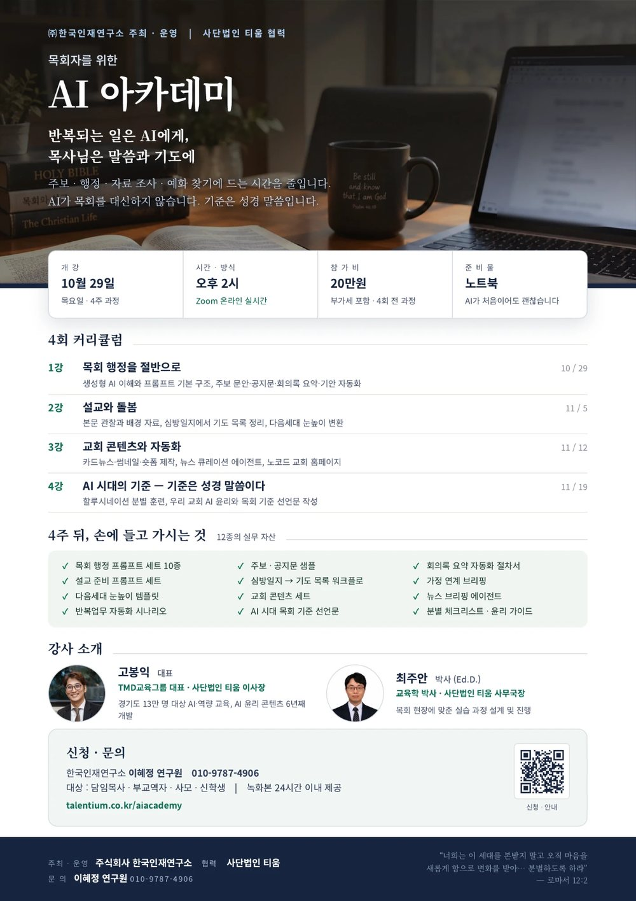

AI 아카데미
반복되는 일은 AI에게,
목사님은 말씀과 기도에
주보 · 행정 · 자료 조사 · 예화 찾기에 드는 시간을 줄입니다.
AI가 목회를 대신하지 않습니다. 기준은 성경 말씀입니다.

안내 포스터 크게 보기왜 지금인가
Why now목회자는 이미 충분히 바쁩니다.
문제는 시간이 없어서가 아니라, 말씀과 사람에게 써야 할 시간이 반복 업무에 잠식된다는 것입니다.
주보 문안, 공지문, 회의록, 심방일지 — 매주 돌아오는 문서 작업이 목회의 중심을 밀어냅니다.
목회자 대상 AI 교육은 이미 시작되었습니다. 다만 대부분 1~2회 단발 세미나이거나 웨비나이고, 일반인 대상 강좌는 실습이 체계적이어도 목회 현장의 맥락과 신학적 기준이 없습니다.
- 단발 세미나·웨비나1~2회로 끝나 실제 업무에 붙지 않습니다
- 일반인 대상 AI 강좌실습은 있어도 목회 맥락과 신학적 기준이 없습니다
- AI 아카데미회차형 실습 + 목회 현장 맥락 + 신학적 기준을 함께 갖춘 4주 과정
AI가 목회를 대신하지 않습니다. 목사님이 목회의 본질에 더 깊이 집중하도록 돕습니다.
4주 과정의 유익
10가지반복 행정이 줄어듭니다
주보 문안, 공지문, 회의록 요약, 기안·보고서를 AI로 처리합니다. 회의록에서 할 일만 뽑아내고, 우리 교회 전용 문서 템플릿을 직접 만들어 가져갑니다.
설교 준비의 막막함이 사라집니다
본문 관찰, 배경 자료 정리, 예화 아이디어를 AI와 함께 찾습니다. 무엇보다 엉뚱한 자료를 가져오지 않게 만드는 프롬프트를 배웁니다.
심방 기록과 기도 제목이 정리됩니다
심방일지를 올리면 성도별 기도 제목이 정리됩니다. 교회 행정 프로그램의 돌봄·다음세대 모듈(생일·심방 기록, 신앙 여정 로드맵, 세대 간 인수인계)을 실제로 보고 배웁니다.
기계를 잘 모르셔도 됩니다
코딩 지식도, 사전 경험도 필요 없습니다. 계정 설정부터 함께 시작하며 모든 회차가 따라 하기 중심의 실습으로 진행됩니다.
매일 아침 AI 비서가 하루를 정리합니다
아침 큐티, 일일 보고, 출근길 뉴스 브리핑, 메일 답장 제안까지 — 직접 하면 2~3시간 걸릴 일을 짧게 처리하는 흐름을 자기 것으로 만듭니다.
감정 상하지 않는 설교 피드백
AI는 반복해서 들어도 감정이 상하지 않습니다. 긴장할 때 습관처럼 나오는 말버릇까지 짚어 줍니다.
교회 콘텐츠를 직접 만듭니다
카드뉴스, 썸네일, 숏폼 영상, 행사 홍보물, 교회 소식지까지 직접 제작합니다. 외주 없이도 우리 교회 색깔을 그대로 담을 수 있습니다.
홈페이지와 행정 시스템을 직접 만듭니다
코딩을 몰라도 노코드로 교회 홈페이지와 행정 시스템을 구축하고, ‘나에게 필요한데 없는 앱’을 직접 만듭니다.
AI 시대의 기준을 세웁니다
무엇을 AI에 맡기고 무엇을 맡기지 않을지 목회자 개인의 기준을 정하고, 우리 교회의 AI 윤리를 선언문으로 만듭니다. 기준은 성경 말씀입니다.
다음세대와 가정을 지킵니다
캐릭터형 AI와의 정서적 관계, 줄어드는 공동체 경험까지 — 청소년의 AI 문제를 목사님이 먼저 알고 가정과 교회에서 다룰 수 있게 합니다.
4회 커리큘럼
실습과 산출물앞 회차는 실전 비중이 높고, 마지막 회차로 갈수록 기준의 비중이 커집니다.
1강목회 행정을 절반으로생성형 AI 이해와 프롬프트 기본 구조, 주보 문안·공지문·회의록 요약·기안 자동화10 / 29 (목)
- 학습 목표
- 생성형 AI의 작동 원리와 한계를 목회자의 언어로 이해하고, 주보·공지·회의록·기안 등 반복 문서 업무를 AI로 자동화할 수 있다.
- 강의
- 생성형 AI 30분 이해 · 목회 행정 자동화(주보 문안·공지문·회의록 요약·기안) · 프롬프트의 기본 구조 · 교회 행정 프로그램 시연
AI가 만든 문서를 목회자가 검토하고 책임지는 원칙 - 실습
- 본인 교회 주보로 문안 생성 → 톤·분량 조정 · 회의록 업로드 → 요약과 할 일 추출 · 우리 교회 전용 문서 템플릿 3종 만들기
- 산출물
- 목회 행정 프롬프트 세트 10종 · 주보·공지문 샘플 · 회의록 요약 자동화 절차서
2강설교와 돌봄본문 관찰과 배경 자료, 심방일지에서 기도 목록 정리, 다음세대 눈높이 변환11 / 5 (목)
- 학습 목표
- 설교 준비의 자료 정리·요약을 AI로 보조하고, 심방·양육 기록을 정리하여 돌봄의 시간을 회복한다. 동시에 설교 본질의 경계를 이해한다.
- 강의
- 설교 준비 보조(본문 관찰·배경 자료·예화) · 심방일지 → 성도별 기도 제목 정리 · 다음세대 눈높이 변환 · 돌봄을 시스템으로(신앙 여정 로드맵, 교회-가정 연계 브리핑)
설교는 누가 하는가 — AI 대필의 경계와 영적 책임 - 실습
- 설교 본문 관찰·질문 리스트 생성 · 심방일지 5건 → 주간 기도 목록 생성 · 설교 요약 → 가정 연계 브리핑 만들기
- 산출물
- 설교 준비 프롬프트 세트 · 심방일지 → 기도 목록 워크플로 · 가정 연계 브리핑 · 다음세대 눈높이 템플릿
3강교회 콘텐츠와 자동화카드뉴스·썸네일·숏폼 제작, 뉴스 큐레이션 에이전트, 노코드 교회 홈페이지11 / 12 (목)
- 학습 목표
- 교회 콘텐츠를 직접 제작하고, 반복 업무를 에이전트로 자동화한다. 실제 적용 사례로 ‘목회자가 직접 만든 결과물’의 가능성을 확인한다.
- 강의
- 이미지·영상 생성(카드뉴스·썸네일·숏폼) · 큐레이션 콘텐츠 — 뉴스·자료를 교회 소식지로 · 자동화 에이전트 입문 · 노코드로 교회 홈페이지·행정 시스템 구축
콘텐츠의 진실성 — 정보 검증과 저작권 - 실습
- 교회 카드뉴스 1세트(3장) 제작 · 매일 아침 뉴스 브리핑 에이전트 만들기 · 홍보 이미지 생성 → 교회 SNS 게시용 가공
- 산출물
- 교회 콘텐츠 세트 · 뉴스 브리핑 에이전트 · 반복업무 자동화 시나리오
4강AI 시대의 기준 — 기준은 성경 말씀이다할루시네이션 분별 훈련, 우리 교회 AI 윤리와 목회 기준 선언문 작성11 / 19 (목)
- 학습 목표
- AI 시대에 변하는 것과 변하지 않는 것을 구분하고, 성경 말씀을 기준으로 AI를 분별하며, 우리 교회의 목회 기준을 선언문으로 정립한다.
- 강의
- AI 시대에 변하는 것과 변하지 않는 것 · 성경적 인간관·진리관 · 할루시네이션과 분별 — AI는 확신 있게 틀린다 · 설교자 정체성과 영적 권위 · 교회 AI 윤리(개인정보·저작권·투명성) · 목회 기준 선언문 워크숍
- 실습
- AI 환각 판별 훈련 · “AI 시대 목회 10대 기준” 조별 워크숍 · 우리 교회 AI 윤리 가이드 초안 작성
- 산출물
- AI 시대 목회 기준 선언문 · 분별 체크리스트 · 교회 AI 윤리 가이드
4주 뒤, 손에 들고 가시는 것
12종의 실무 자산모든 회차는 듣고 끝나는 강의가 아니라 직접 만들어 가져가는 실습입니다.
- 목회 행정 프롬프트 세트 10종1강
- 주보 · 공지문 샘플1강
- 회의록 요약 자동화 절차서1강
- 설교 준비 프롬프트 세트2강
- 심방일지 → 기도 목록 워크플로2강
- 가정 연계 브리핑2강
- 다음세대 눈높이 템플릿2강
- 교회 콘텐츠 세트3강
- 뉴스 브리핑 에이전트3강
- 반복업무 자동화 시나리오3강
- AI 시대 목회 기준 선언문4강
- 분별 체크리스트 · 윤리 가이드4강
강의에서는 실제로 AI로 만들어 쓰고 있는 결과물 — 운영 시스템, 웹사이트, 뉴스 브리핑 에이전트, 교회 행정 프로그램 — 을 시연 자료로 사용합니다.
강사 소개
Instructors고봉익대표
경기도 13만 명 대상 AI·역량 교육, AI 윤리 콘텐츠 6년째 개발
최주안박사 (Ed.D.)
목회 현장에 맞춘 실습 과정 설계 및 진행
참가 안내
일정과 참가비| 일정 | 10월 29일 · 11월 5일 · 11월 12일 · 11월 19일매주 목요일 오후 2시 · 4회 |
|---|---|
| 방식 | Zoom 온라인 실시간접속 링크는 신청자에게 개별 안내드립니다 |
| 대상 | 담임목사 · 부교역자 · 사모 · 신학생 |
| 참가비 | 20만원 (부가세 포함)4회 전 과정 |
| 준비물 | 개인 노트북 (필수)실습 중심 과정이므로 반드시 지참해 주십시오 |
| 녹화본 | 각 회차 종료 후 24시간 이내 제공수강생 본인 학습용이며, 무단 공유·배포·재게시를 금합니다 |
| 강사 | 고봉익 대표 · 최주안 박사 (Ed.D.) |
| 주최 · 운영 | 주식회사 한국인재연구소협력 : 사단법인 티움 |
모집 · 수납 · 환불 · 영수증 발급은 주식회사 한국인재연구소가 담당합니다.
신청 방법
Apply신청서 작성
아래 버튼을 눌러 신청서를 작성해 주십시오.
참가비 입금
20만원을 안내된 계좌로 입금하시면 접수가 완료됩니다. 입금자명은 신청하신 성함으로 부탁드립니다.
확정 안내
입금이 확인되면 확정 문자를 보내 드리고, 개강 전날 Zoom 접속 링크와 준비물을 다시 안내드립니다.
- 입금 계좌
- NH농협은행 317-0030-4209-51 (주)한국인재연구소
- 문의
- 한국인재연구소 이혜정 연구원 · 010-9787-4906
환불 규정
- ①개강 전일까지 취소하시는 경우 전액 환불해 드립니다.
- ②개강 이후에는 진행된 회차를 기준으로 환불합니다.
1강 수강 후 ~ 2강 시작 전 : 납부액의 2/3 (134,000원)2강 수강 후 ~ 3강 시작 전 : 납부액의 1/2 (100,000원)3강 수강 후 : 환불되지 않습니다
- ③주최 측 사정으로 폐강되거나 일정이 변경되어 참여가 어려우신 경우 전액 환불해 드립니다.
- ④녹화본을 수령·열람하신 회차는 수강하신 것으로 보아 환불 산정에 포함됩니다. (신청 시 동의 필요)
- ⑤환불 요청일로부터 3영업일 이내에 입금 계좌로 송금해 드리며, 송금 수수료는 주최 측이 부담합니다.
- ⑥세금계산서·현금영수증을 발급받으신 경우 환불액에 맞추어 수정 발급됩니다.
자주 묻는 질문
FAQ컴퓨터를 잘 다루지 못해도 괜찮을까요?
노트북이 꼭 있어야 하나요?
한 회차를 빠지면 어떻게 되나요?
AI가 설교를 대신 쓰게 되는 것은 아닌지요?
과정이 끝난 뒤에는요?

“너희는 이 세대를 본받지 말고 오직 마음을 새롭게 함으로 변화를 받아로마서 12장 2절
하나님의 선하시고 기뻐하시고 온전하신 뜻이 무엇인지 분별하도록 하라”